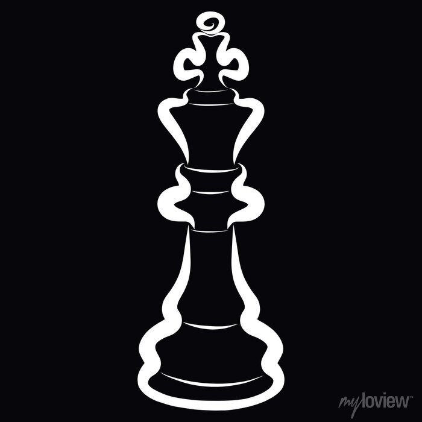

Sobre Mim
Meu nome é Mateus Roque Weiler, nasci em Tapejara no dia 02/01/2007,
mas atualmente moro em Nova Prata.
Atualmente estou estudando ciencia da computacao na UPF,
buscando aprender cada vez mais e me dedicando aos estudos.

Gosto muito de jogar jogos de estratégia e jogos de sobrevivência
Não só jogos online como também jogos físicos de carta e de tabuleiro
Meu GitHub